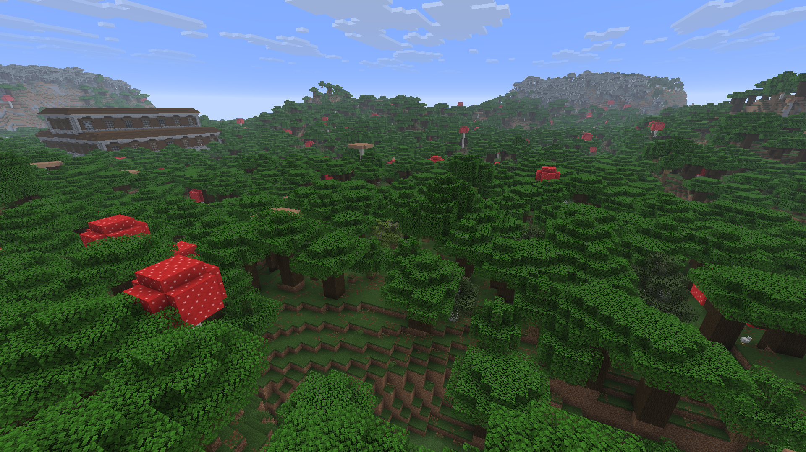
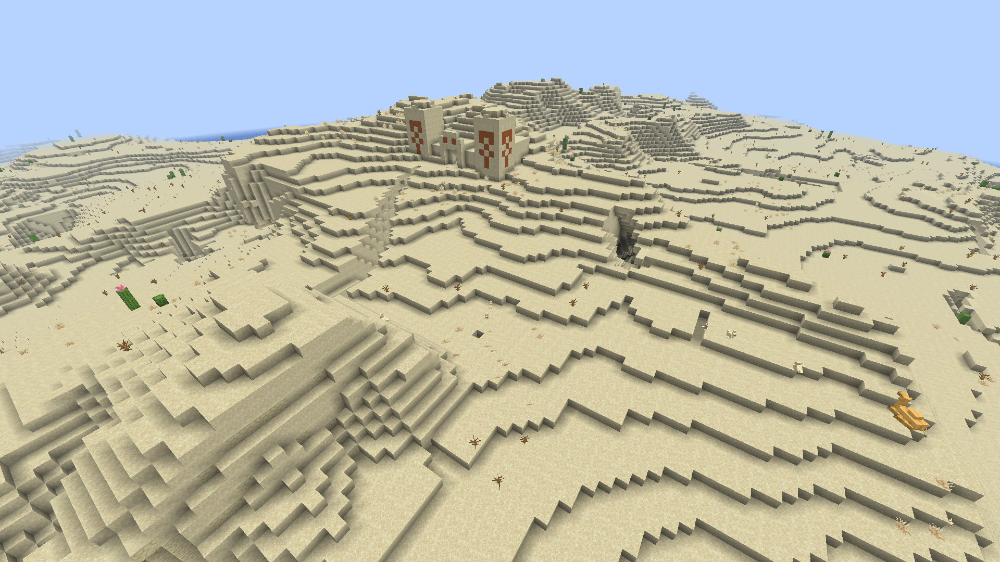
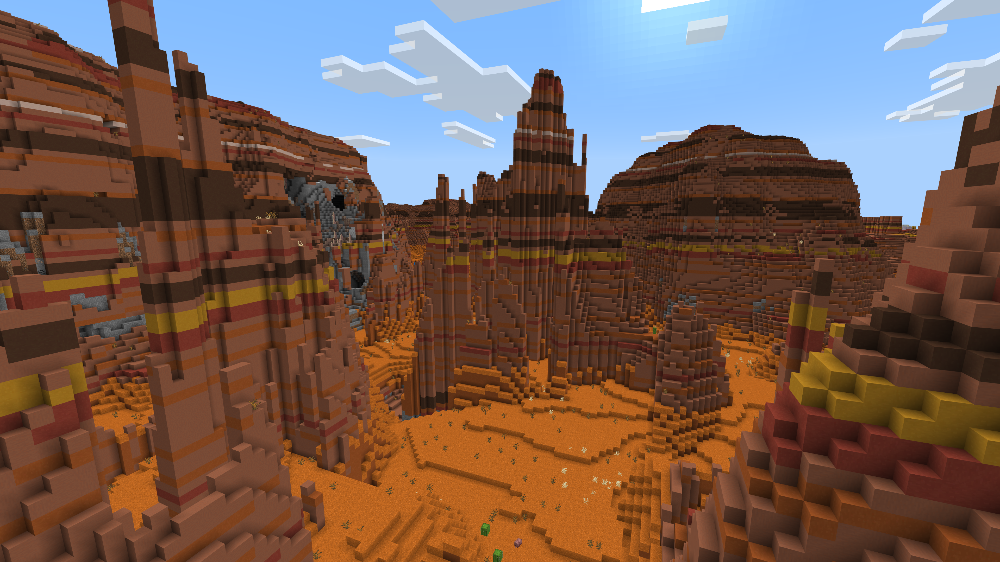
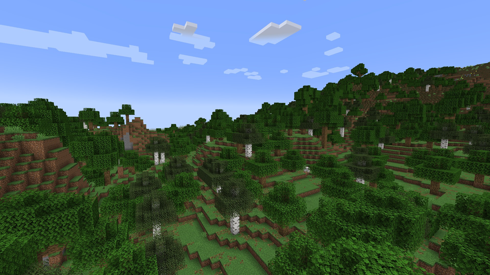
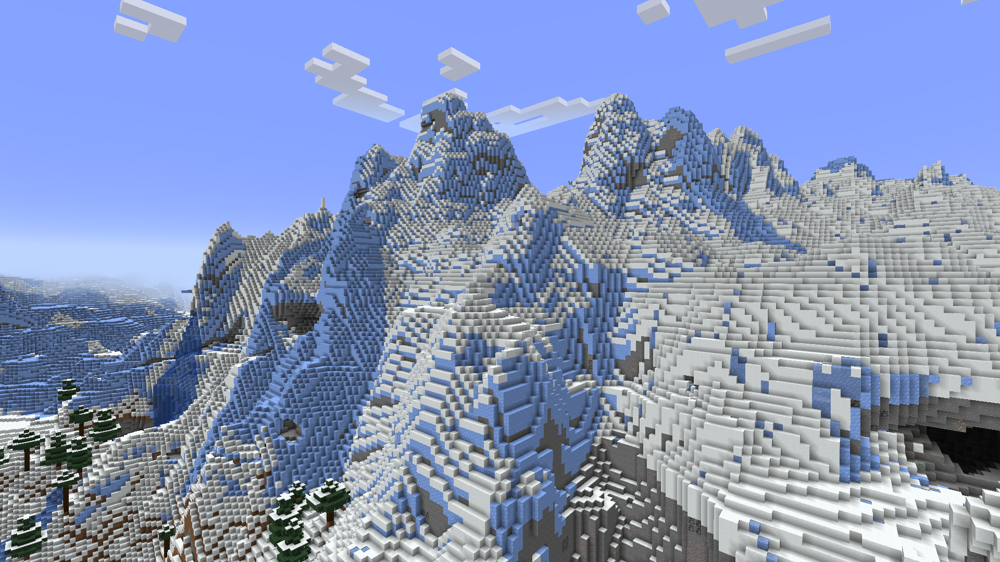
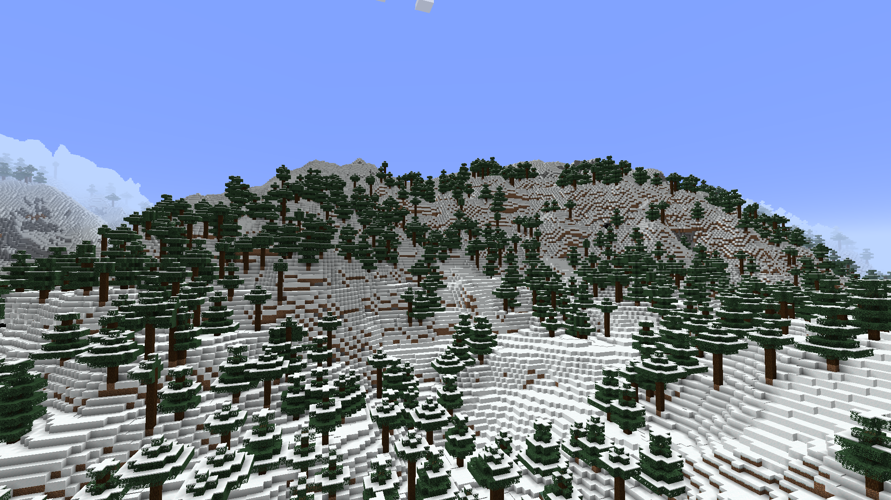
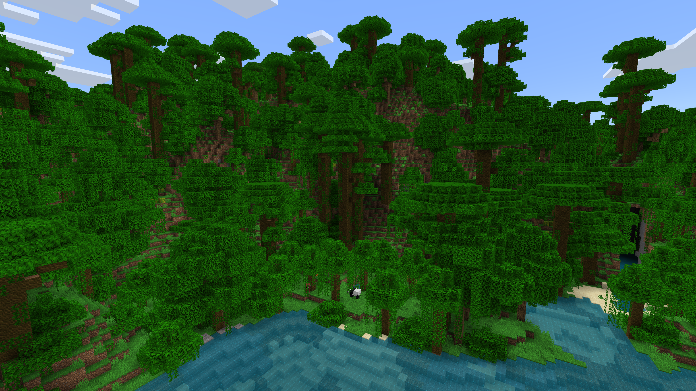
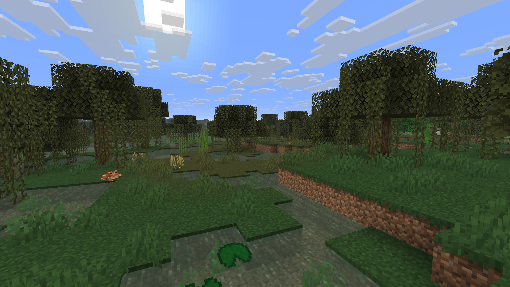
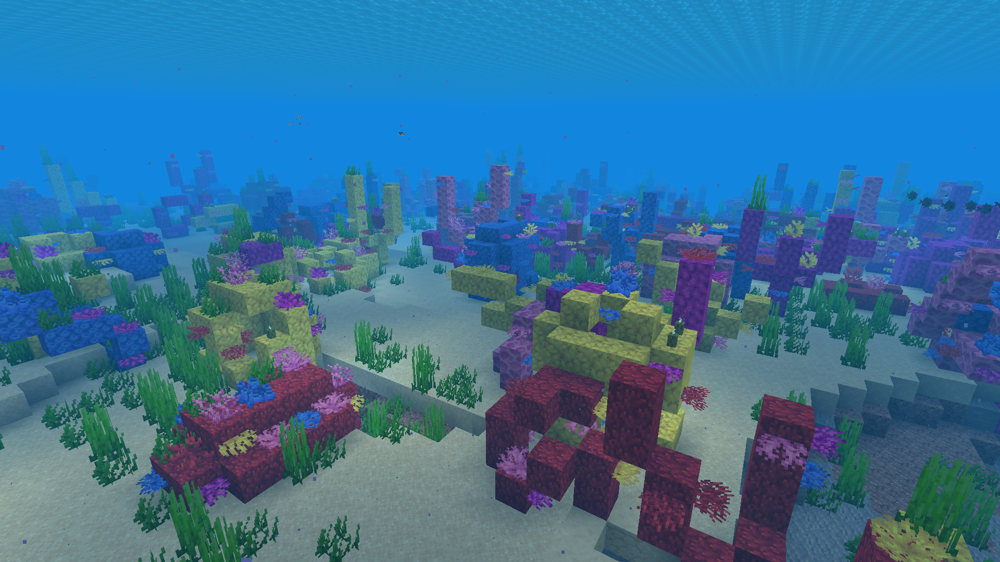

Minecraft biomes
Biomes are regions with their own terrain, climate, and resources. Explore a few of the landscapes you may discover and what to expect in each one.
Explore the biomes

Dark forest
A dense canopy keeps the forest floor dim. Watch for mobs beneath the trees. You have a rare chance to find woodland mansions.

Desert
Sand and cacti stretch across a dry landscape. Wood is scarce, so bring supplies before building. Desert temples may contain valuable loot.

Eroded badlands
Layered terracotta forms steep, colorful cliffs. Wood and water are limited in this biome, so plan ahead. Mineshafts may be found here more easily.

Forest
Great biome to spawn in as it provides ample resources and shelter. Look nearby for animals and open clearings.

Frozen peaks
High, icy peaks make travel difficult and offer dramatic views. Watch your footing near steep drops. Bring leather boots so you don't sink into powder snow.

Grove
Spruce trees and snow cover mountain foothills. The cold, wooded terrain can be rugged to cross.

Jungle
Tall trees, vines, and dense undergrowth make the jungle easy to get lost in. Look for bamboo and unique wildlife.

Swamp
Shallow water and mud wind through the trees. Frogs live here, and slimes may appear at night.

Warm ocean
Warm waters contain coral reefs and colorful tropical fish. Bring a boat or water breathing potions to prepare for underwater exploration.